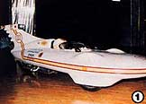
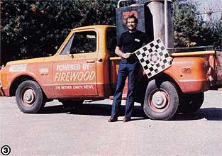
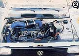
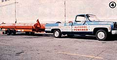
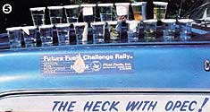
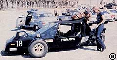
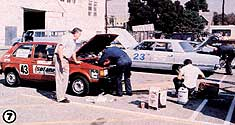
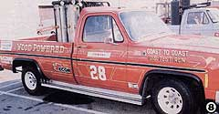
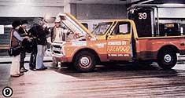

The Future Fuels Challenge Rally proved (among other things) that it's possible to travel
Regular readers of this publication-and subscribers to MOTHER's Experimental Vehicle Newsletter -are no doubt aware that members of MOM's research crew spent a great deal of time and effort preparing both our woodburning truck and our ethanol-powered van for the Los Angeles-New York City "Future Fuels Rally" sponsored by Shepard Electronics, Inc. of Rochester, New York. (See MOTHER NO. 72, page 192, for more details.)
Well, the big event was held during the week of October 17-24 . . . and though there were-as could have been predicted in an undertaking of this magnitude-a few disappointments along the way, 20 vehicles rolled into the Big Apple powered by just about everything but petroleum!
EARLY DISAPPOINTMENTS TURN TO DETERMINATION
As with any competitive affair preceded by ballyhoo and huzzahs, there were a lot more people who talked about participating than there were folks who actually paid their entrance fees. But when the green flag dropped, 38 entrants pointed their vehicles east and bade farewell to the City of Angels . . . en route, through nearly two dozen checkpoints, to New York City (via Phoenix, Arizona . . . Albuquerque, New Mexico . . . Denver, Colorado . . . Omaha, Nebraska . . . Chicago, Illinois . . . Cleveland, Ohio . . . and Rochester, New York).
Unfortunately, a number of occurrences marred what could have been a fairly smoothly run event. To begin with, the size of the purse (at one point said to total $300,000) was held in question just days before the rally . . . putting a burden on many people who'd made financial sacrifices in the hopes of recouping their expenditures in the end. Then, in Los Angeles, it was indicated that the procedure by which the various wood fuels' BTU values were to be measured (there were four wood-powered entries) would be changed . . . a decision that, many felt, worked to the disadvantage of the liquid -fueled vehicles, whose rates of consumption were being measured very accurately. To make matters worse, a tragic accident just outside Phoenix left rally coordinator David Carmichael badly injured . . . and very nearly shattered the contestants' hopes of continuing the rally according to plan.
Despite the setbacks, however, the show did go on. An impromptu "yea or nay" conference, held in Albuquerque by the drivers left in the group, settled any doubts as to the future of the race: "We're going to New York, rally or not!"
[1] The California Commuter. [2] A sunflower oil-burning ADM Rabbit. [3] B.V. Alvarez holds the checkered flag signed by all the finishing entrants. [4] The NAFCO entry runs on ethanol "Superfuel". [5] The visitors' nonpetroleum fuels. [6] The Citroen-powered Trihawk. [7] Pre-race preparation. [8] ECON's wood-fueled entry. [9] MOTHER's truck makes the Big Time!
BURNING JUST ABOUT EVERYTHING UNDER THE SUN
With that "East Coast or bust" attitude prevailing, the real reason for the event- demonstrating that alternative fuels have a place in today's energy-scarce worldcame to the fore all the more strongly. Probably the most popular gasoline substitute was ethanol, and many independent entrantsalong with such corporate giants as the Archer Daniels Midland Company-opted for that made-from-corn combustible to power their vehicles. Methanol, made from both coal and wood, was also a favorite, and was used by "little guys" and large corporations alike . . . including CONOCO/B.F. Goodrich, Ford Motor Company (whose Alternate Fuels Division helped sponsor several automobiles using both types of alcohol fuel), the Denver Research Institute (University of Denver), and the official entry of The 1982 World's Fair.
As we mentioned earlier, there were four wood-powered entries (MOTHER's included), and the coast-to-coast journey provided an excellent opportunity for the biomassburners to compare notes and give their machines a nearly nonstop "do or die" acid test under a variety of climatic conditions. There were also diesel-engined contenders, and the drivers of those vehicles (among them a turbocharged Peugeot-engined Jeep) used various kinds of vegetable oils to power their creations. (Future Fuels Challenger Doug Malewicki-designer of the California Commuter featured in issue 3 of the Experimental Vehicle Newsletter -fitted his highly aerodynamic tri-wheeler with a 6.4-horsepower Lombardini diesel engine supplied by MOTHER's researchers, and managed to squeeze an average of 145 miles from each gallon of specially blended fuel. Since Doug's car was an unofficial entry, however, he left the rally at Phoenix, having proved his point.)
WHAT DID WE LEARN?
At the time of this writing, the Future Fuels Rally sponsors have not yet declared an overall winner, pending the calculation of a vehicle-weight-IBTU-consumed ratio for each entry . . . a figure that most contestants agree-given the less-than-perfect conditions under which the event was held-will likely be an educated estimate at best.
At any rate, whether there's one victor or 20, the members of MOM's research crew (B.V. Alvarez, Robyn Bryan, Norman Holland, Don Barrett, and John Vogel) learned some valuable lessons from their experience with the ethanol-fueled van, the woodburning pickup (which, by the way, utilized a dual-fuel carburetor with alcohol as the reserve source of energy), and our ethanol-powered Ford truck, which went along to rack up some more test miles and to serve as a fuel carrier.
Here are the facts: Both alcohol-powered vehicles performed exceptionally well, save for a minor filter problem on the Ford. (It was a blessing in disguise actually, since it forced us to use a different type of filter-a corrugated undersink, paperelement, water-straining cartridge-which, as it turned out, performed better than anything we'd tried previously.) Furthermore, the trip allowed us to chalk up some final observations on the recent camshaft modifications that we'd made to enhance the alcohol-powered vehicles' performance during off-idle and midrange operation.
In a nutshell, the best-behaved cam, measured at 0.010" tappet travel, had the following specifications: Intake valve open at 6° Before Top Dead Center, and closed at 41 ° After Bottom Dead Center . . . exhaust valve open at 57° Before Bottom Dead Center, and closed at 3° BTDC . . . and a lift of 0.425" for both the intake and exhaust valves. (For those who might not wish to purchase a new camshaft with these specifications, Larry Wallace at Holman & Moody-Dept. TMEN, Box 19065, Charlotte, North Carolina 28219-is prepared to regrind stock cams to order.)
As far as our woodburning vehicle was concerned, our lessons were even more rewarding. Besides finding out that wood smoke and ethanol make perfect companion fuels (both are slow-burning, perform best under high compression and with advanced timing, and thus function well in the same engine), we learned that certain kinds of wood-such as the ponderosa pine commonly found on the West Coast-don't compare favorably with our old standbys, scrap yellow pine and oak, because of the western wood's high ash content and low gas quality. In fact, at the start of the trip, the research crew had to fabricate a larger filter to contend with the increased amount of ash created by the inferior fuel .. . but even with these last-minute problems, the 454-cubic-inch Chevy-working at a 12-to-1 compression ratio and capable of traveling at speeds up to 80 MPH-covered upward of 100 miles on each of its 150-pound fuel loads before stopping for a refill.
Later on in the trip, in the cold climates of Denver and Omaha, excessive condensation proved to be another bugaboo, since it shortened the intervals between necessary filter cleanings. We're currently designing a centrifugal extractor that should eliminate this problem.
All in all, we've concluded that our time and effort were well spent .. . if not because we'll reap an outright reward, then at least because we helped to prove that alternative fuels aren't merely a pipe-dreamer's fantasy.
EDITOR'S NOTE: For information on subscribing to MOTHER's Experimental Vehicle Newsletter, see page 161.
|
 |
 |
 |
|
 |
 |
 |
|
 |
 |
 |